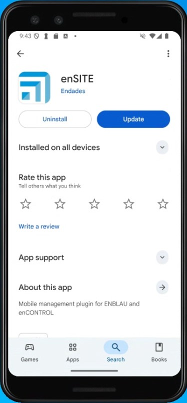
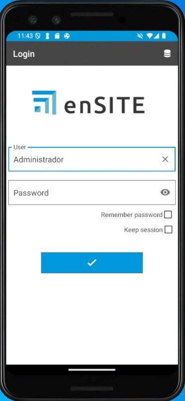
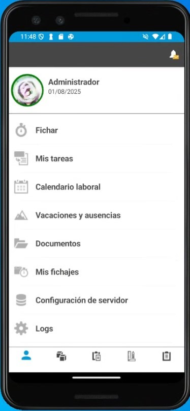

Requisitos de instalação do enSITE
1. Requisitos para a configuração da App enSITE
Antes de proceder à instalação e configuração do enSITE, é necessário realizar algumas configurações prévias.
1.1. Requisitos mínimos
Os requisitos mínimos para instalar o enSITE num telemóvel ou tablet dependem da plataforma e são definidos pela Google Play Store no Android e pela App Store no iOS (Atualmente indisponível).
| Requisito | Android (Play Store) | iOS (App Store) |
|---|---|---|
| Versão mínima do sistema | Android 15 (API 35); recomenda-se a utilização das versões mais recentes | iOS 16 (a Apple exige que novas apps e atualizações suportem as últimas 3 versões) |
| CPU / Arquitetura | ARM 64 bits (arm64-v8a); CPU multi-core suficiente para apps padrão | Todos os iPhones/iPads recentes utilizam ARM 64 bits |
| RAM mínima | 3 GB mínimo | 3 GB mínimo; a Apple não verifica explicitamente, depende da versão do iOS e do modelo |
| Armazenamento livre | 200 MB mínimo para instalação | 200 MB mínimo para instalação |
| Ecrã / resolução | ≥720p recomendada; compatível com vários tamanhos (telemóvel e tablet) | Todos os dispositivos compatíveis com iOS 16 ou superior |
| GPU / gráficos | Integrada, compatível com OpenGL ES ou Vulkan | Integrada no SoC da Apple; todos compatíveis com iOS 16 |
| Conectividade | Wi-Fi / Dados móveis; Bluetooth, GPS | Wi-Fi / Dados móveis; Bluetooth, GPS |
| Permissões / políticas | Políticas de privacidade se houver dados; uso mínimo de permissões; conformidade com a Google Play | Políticas de privacidade; conformidade com as App Store Review Guidelines; permissões justificadas |
| Atualizações | Depende da Google Play e da compatibilidade declarada | A Apple exige compatibilidade com as versões mais recentes; se o dispositivo não atualizar o iOS, não receberá novas versões |
💡 Observações:
-
Android: mesmo que o hardware seja suficiente, a atualização da app pode ser bloqueada por filtros da Play Store.
-
iOS: a principal limitação é a versão do iOS suportada pelo dispositivo. A Apple controla automaticamente a compatibilidade.
-
RAM e armazenamento: são recomendações práticas; a Google não bloqueia oficialmente apps com base na RAM.
1.2. Antivírus e Firewall
Seguir as recomendações da secção 2. Ajustes de antivírus e firewall em Configuração do Sistema.
2. Instalação do enSITE
-
A partir de um tablet ou telemóvel com ligação Wi-Fi, aceder à Play Store (Android) ou à App Store (iOS - Atualmente indisponível), procurar enSITE e descarregar a aplicação.

-
Abrir o enSITE e introduzir as seguintes informações:
- Código de licença (fornecido pela Endades)
- IP Servidor (os mesmos onde o ENBLAU está instalado no servidor)
- Base de dados (a mesma onde o ENBLAU está instalado no servidor)
- Utilizador – sa (Autenticação SQL Server)
- Palavra-passe – A mesma palavra-passe de ligação à base de dados do ENBLAU (Autenticação SQL Server)

-
Login utilizador e palavra-passe (os mesmos utilizados no ENBLAU)


ℹ️ Nota: Para mais informações sobre possíveis erros no processo de ligação ao servidor a partir do enSITE, seguir o link: Possíveis erros enSITE
⚠️ Importante: É obrigatório utilizar, no mínimo, o SQL Server 2022 para garantir a compatibilidade com futuras versões do ENBLAU e do enSITE.
 Español
Español
 English
English
 Italiano
Italiano
 Português
Português